Concept et vision du projet
Le mystère du Masque de Fer
L’expérience s’inspire de l’un des plus grands mystères du règne de Louis XIV : l’emprisonnement de l’Homme au Masque de Fer. De Pignerol à Exilles, puis de Sainte-Marguerite à la Bastille, son parcours nourrit encore aujourd’hui une fascination collective faite de secrets d’État, de rumeurs et d’hypothèses contradictoires.
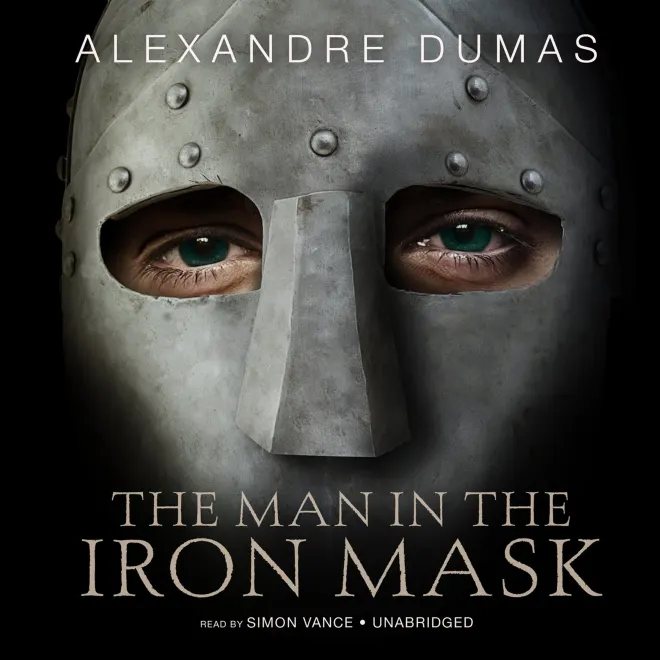
De la visite à l’expérience
L’idée du projet est née lors de ma visite du Fort Royal de l’île Sainte-Marguerite. Face à une cellule presque vide et à une médiation limitée, j’ai été frappé par le contraste entre la puissance du mystère historique et l’expérience réellement proposée aux visiteurs. Le projet cherche à transformer cette visite en enquête immersive.
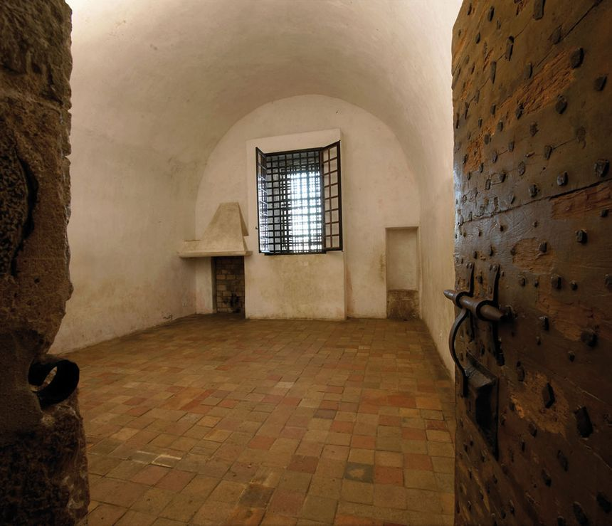
Direction narrative et créative
J’ai porté la direction créative du projet, en articulant recherche historique, écriture du scénario, conception narrative, direction artistique, mécaniques d’enquête et prototypage immersif. Mon objectif était de transformer une matière historique complexe en une expérience claire, sensible et interactive.

Recherches historiques et conception narrative
Les archives comme matière narrative
Le scénario s’appuie sur les correspondances entre Louvois et Saint-Mars, les déplacements du prisonnier entre différentes forteresses, ainsi que les recherches historiques autour de son identité. Les archives ne servent pas seulement de documentation : elles deviennent la matière première du récit, des indices et de la progression dramatique.
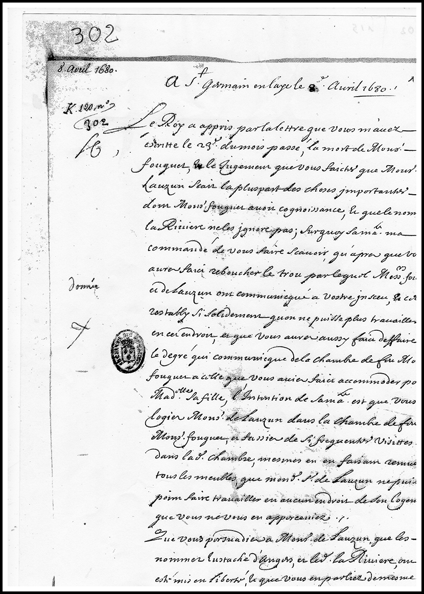
Histoire, doute et fiction
Le projet repose sur trois niveaux : la réalité historique, les zones d’ombre et la fiction immersive. Les faits attestés structurent le cadre, les incertitudes nourrissent l’enquête, et la fiction permet au visiteur d’entrer dans le mystère sans trahir le doute historique qui entoure encore l’affaire.

Le visiteur devient enquêteur
Le visiteur incarne un moine janséniste infiltré au Fort Royal, chargé d’enquêter sur l’identité du prisonnier masqué dans un contexte de surveillance religieuse et politique sous Louis XIV. Ce point de vue donne un rôle clair au joueur : explorer, observer, collecter des indices et progresser dans un lieu conçu pour empêcher de voir et de savoir.
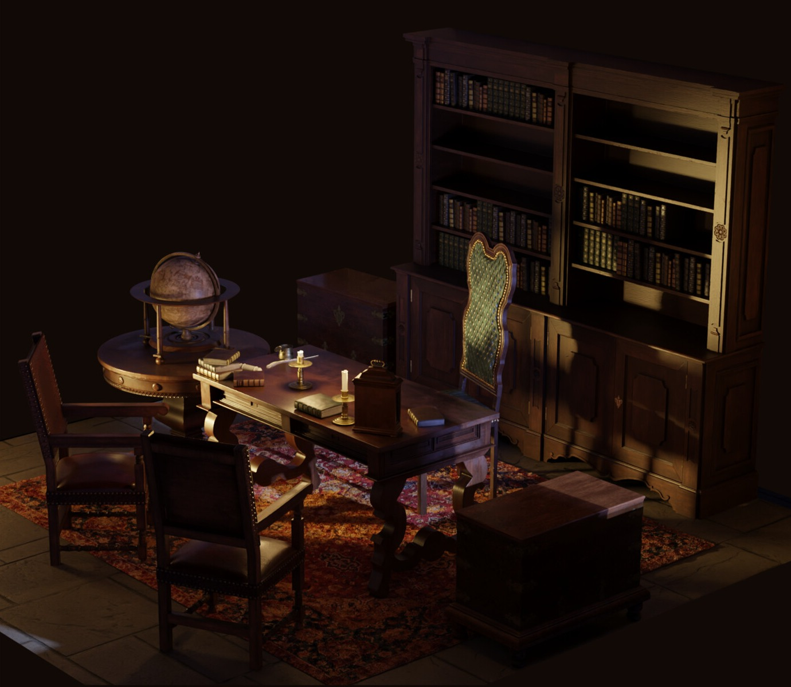
Immersion et direction artistique
Lumière méditerranéenne, obscurité carcérale
La direction artistique repose sur un contraste fort : à l’extérieur, la lumière méditerranéenne de l’île Sainte-Marguerite ; à l’intérieur, l’obscurité carcérale, la pierre humide, les chandelles, les grilles et les couloirs étroits. Ce contraste renforce l’impression d’un secret enfoui au cœur d’un lieu pourtant lumineux.
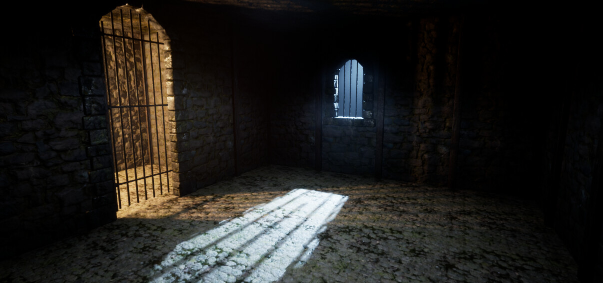
Narration environnementale
Dans cette expérience, le lieu raconte autant que les dialogues. Les tambours de portes, les cellules, les objets administratifs, les lettres et les dispositifs de surveillance deviennent des éléments narratifs. Le visiteur comprend peu à peu que toute l’architecture du fort est pensée pour empêcher de voir, de savoir et de parler.
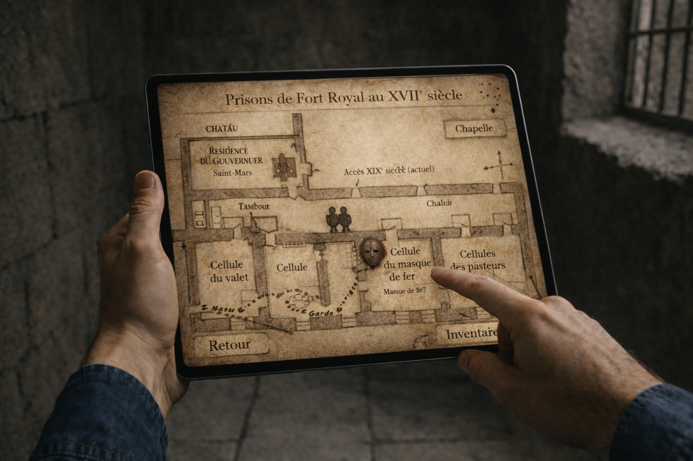
Tension cinématographique
La mise en scène cherche à faire monter l’attente avant la rencontre avec le prisonnier. Sons de portes, silence, voix étouffées, lumière faible et progression lente dans les espaces de surveillance créent une tension dramatique. Le Masque de Fer devient une présence avant même d’être visible.
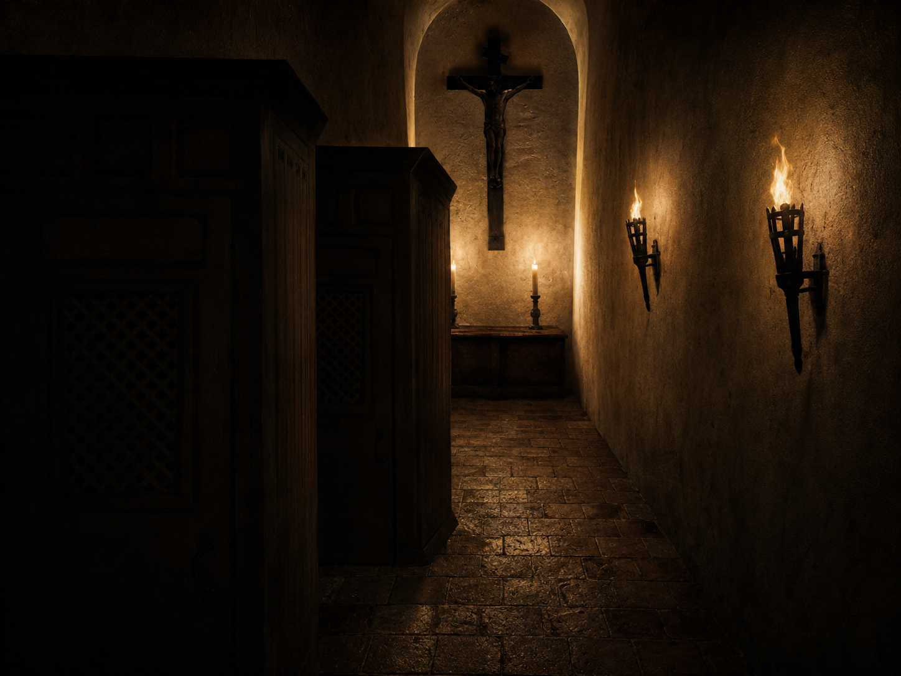
Prototype et validation culturelle
Prototype VR Unity immersif
Un prototype Unity en vue 360° à la première personne permet de tester la mise en scène immersive d’une cellule reconstituée : clair-obscur, ambiance sonore, sensation d’enfermement et premières interactions. L’usage du gyroscope sur tablette ou smartphone sert à renforcer la présence du visiteur dans l’espace, tout en plaçant la technique au service de l’atmosphère et de la tension narrative.
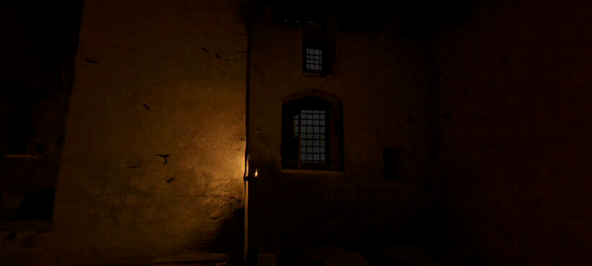
Démarche de terrain
Le projet s’appuie sur une démarche de terrain : visite du Fort Royal, échanges avec les gardiens de l’île, recherches iconographiques et confrontation du concept au lieu réel. Cette approche permet d’ancrer la fiction dans un patrimoine existant, avec ses contraintes, ses espaces et son histoire propre.
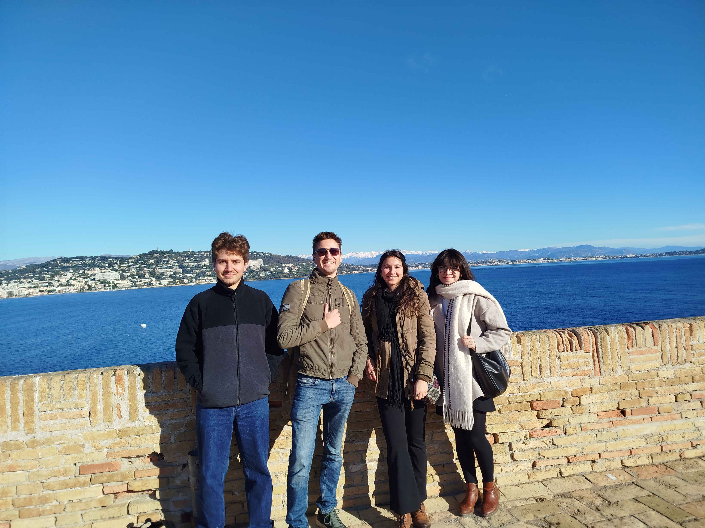
Retours professionnels
Le scénario et la démarche ont été présentés à Christophe Roustan Delatour, spécialiste du Masque de Fer et responsable culturel à Cannes. Ses retours ont confirmé l’intérêt historique, narratif et immersif du projet, ainsi que son potentiel dans une réflexion plus large sur les expériences numériques patrimoniales.
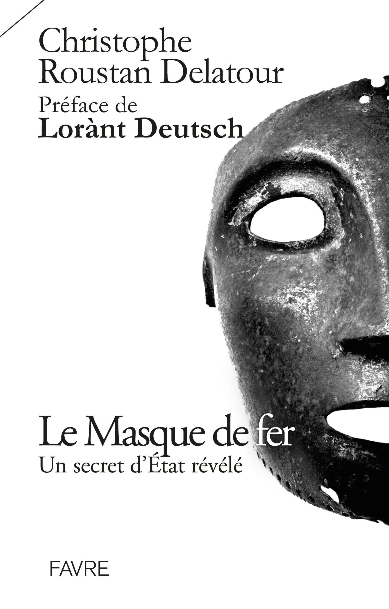
Conclusion
Faire ressentir l’Histoire
L’objectif du projet n’est pas seulement d’expliquer l’histoire du Masque de Fer, mais de faire ressentir un lieu, une époque et un secret. À travers l’enquête, l’exploration et la mise en scène, l’expérience cherche à dépasser la simple reconstitution pour transformer le patrimoine en récit vivant.
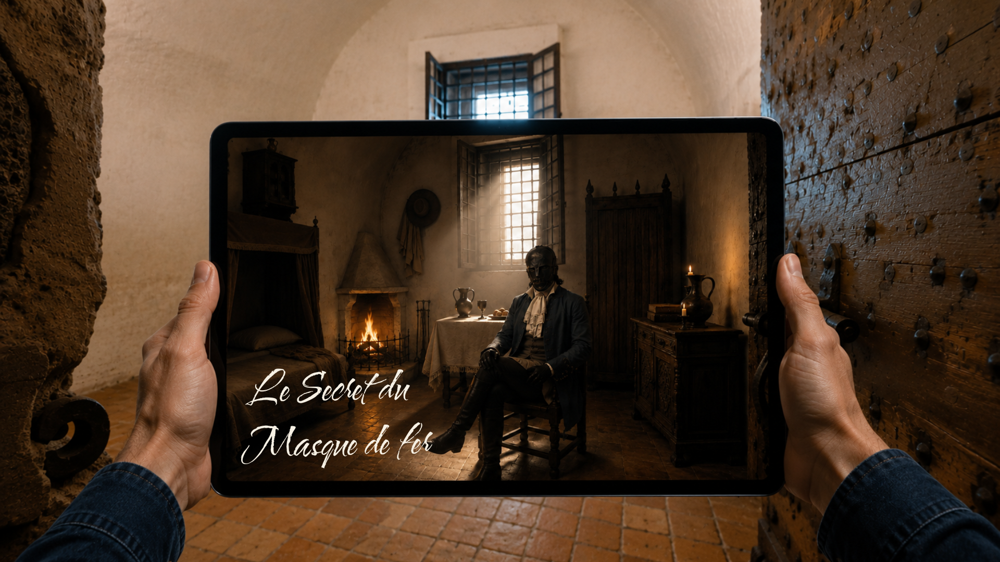